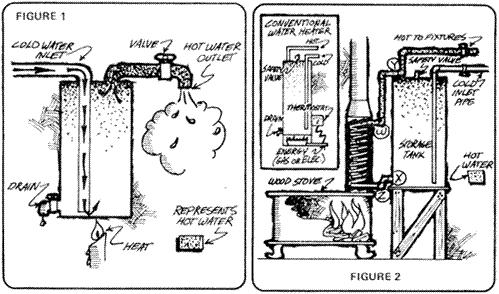
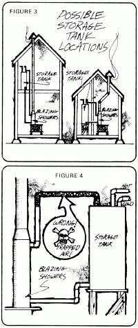
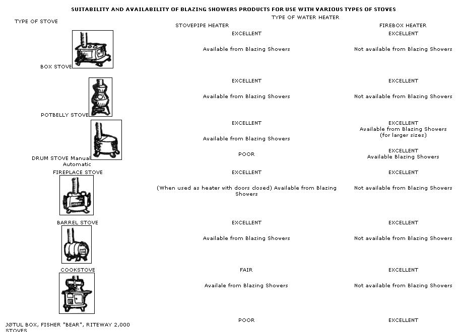

Three years ago, we were sitting in our cabins wondering how we could satisfy our addictions for hot baths and showers, without paying ridiculous prices for disappearing reserves of fossil fuels. Putting our talents together (one of us is a mechanical wizard and the other a Ph.D. chemist), we devised a homestead alternate energy system - based on the use of otherwise-wasted stovepipe heat - that's allowed us to take those hot baths. We call our system the Blazing Showers Stovepipe Hot Water Heater.
As you can see in Fig. 1 (see Image Gallery), an ordinary water heater is nothing more than a storage tank (located between a house's water source and its various hot water faucets) sitting over a gas or electric burner. Since water tends to rise as it's heated, cold water is piped in at the bottom of the tank, while hot water is drawn off from the top.
Fig. 2 compares such a conventional water heater with a Blazing Showers system. As you can see, our setup employs a coil of copper tubing - located inside a woodburning stove's stovepipe - to heat the water that's held in our storage tank. Hot smoke rising through the stovepipe warms the water in the copper coil, which causes it to rise (and thereby draw more cold water into the coil). Meanwhile, the stovepipe-heated water flows into the top of the storage tank, where it remains until someone decides to take a "blazing shower" and turns on a faucet.
Notice that there are no pumps in our system: Instead, plain ole thermal convection does all the work.
How long does it take to fill a tank with hot water this way? The answer depends on how cold the incoming cold water is, how many gallons your water heater holds, and how hot the flame is in your stove. We estimate that a blazing fire in an average-sized wood-burner can produce 20 gallons of hot water per hour. And-if you store that heated water in an insulated tank as we prescribe-it'll remain hot for up to 48 hours after the fire goes out. What this means in practical terms is that if you have a fire in your stove one evening, you'll still have all the hot water you want (for bathing, dishwashing, etc.) the following morning when you wake up. In fact, that water will actually remain warm for two full days ... even if you don't light the stove again at any time during that period.
The first thing you need before you can install a system of your own, of course, is a storage tank. If you already have a hot water heater, you can use it ... otherwise, look around for a "previously owned" unit.
Many water heaters-you'll soon discover-are discarded solely because of a broken thermostat or heating element. Such retired fuel-eaters-as long as they don't leak and aren't badly rusted-are perfectly suited to our purpose. To find one of these storage containers, search around at the local dump, the power company, or in abandoned houses (make sure, though, that a house is truly abandoned before you go rummaging through it). Or-if you don't have the time to scrounge up a water tank-see your local plumber. Chances are, he handles quite a few broken water heaters and can get you a good one for $5.00 or a basket of snow peas.
Naturally, as we've already pointed out, you want a tank that's watertight and at least relatively rust-free. We've found that the ease with which the various fittings (attached pipes and connectors) can be removed from an old water heater is-quite often-a good indication of the unit's all-around health. Or, to put it the other way 'round, if its fittings are rusted so badly that you can't get them off, the heater is probably not worth fooling with.
Once you've obtained a serviceable water tank, it's important that you install it correctly in relation to the stovepipe coil. Notice-in Fig. 2-that opening X is above opening Z . . . and that Y is above W. Obviously, Y must be higher than W because it's the rising column of hot water that forces the circulation of fluid through the system.
Note, too, that the vertical distance separating Y and W determines how far-horizontally-you can put the water tank from the stove: You can move the tank up to two feet away from the wood-burner for every foot that Y is above W.
Conventional water heaters lack adequate insulation, due (we believe) to the politics of consumerism and to the fact that each unit's storage drum is so close to its heating element. Because our goal is efficient heat storage (and since-in our system-the reservoir is somewhat farther from its source of heat), we can-and should-do a better insulation job.
One way to accomplish this is to [A] bundle the entire water heater-top, bottom, and sides-in four to six inches of fiberglass, [B] wrap a blanket (or sheet) around the fiberglass-clad tank, and [C] stitch the blanket's (or sheet's) edges together. Or you could build a box around your storage tank and fill the enclosure with natural materials-wood shavings, pieces of bark, sawdust, chicken feathers, rags, egg cartons, wool, etc.-that create insulating air traps.
In addition to protecting the tank from heat loss, we recommend that you also insulate all exposed pipes.
If you were to pipe the hot water coming from your Blazing Showers stovepipe coil directly into the top of your storage tank as shown in Fig. 4, any air bubbles in the pipes would soon become trapped at the system's highest point. This would impair the convection-driven circulation of liquid through the heating coil and, to prevent such an occurrence, we've designed a special adapter.
As shown in Fig. 5, our adapter assembly screws onto the hot water outflow pipe at the top of the storage tank and thereby makes it possible for newly heated water to get into the container via the same pathway by which it is drawn off to the faucets. Thus, any air in the system quickly exits to the hot water spigots and is eliminated. (Note, too, in Fig. 5, that the adapter assembly contains an anti-siphoning device to prevent cold water from being drawn from the bottom of the storage vessel when the hot water faucets are turned on.)
Our Firebox Hot Water Heater works in exactly the same manner as our stovepipe model, except that the heating coil is mounted in the stove's fiirebox instead of the flue. We designed this system specifically for use with highly efficient automatic drum-type stoves (such as the Ashley 25, King Automatic, Atlanta Automatic 2502, etc.) ... stoves that produce such cool stovepipe smoke that we're forced to put our heating coil right inside the firebox. (Fortunately, these wood-burners are spacious enough inside to accommodate both the copper tubing and a large quantity of fuel.) Fig. 6 shows how our Firebox Hot Water Heater coil is mounted in one of these stoves.
With just a couple of modifications, our basic Blazing Showers system will work as both a stovepipe AND a solar water heating system. That is, a wood stove and a solar collector could be used either simultaneously or independently to produce hot water and feed it to the storage tank (see Fig. 7). Such a setup, of course, is ideal for folks who-as we do-live in the sunnier parts of the country where wood stoves aren't used all year round. And-since the sun-powered part of the system need work only during the hottest weather-the collector itself can be a rather simple, low-technology device. We intend to market our own super-simple "sunny day'' solar collector next summer.
Piping-hot water-warmed by a wood stove's waste heat-is a natural. And it's economical! (Just think: With no more hot water bills to pay, you can pocket an extra $10 to $25 a month!) Of course we're prejudiced, but any way we look at it, the Blazing Showers system is a piece of cake . . . and added self-sufficiency is the frosting.
|
 |
 |
 |